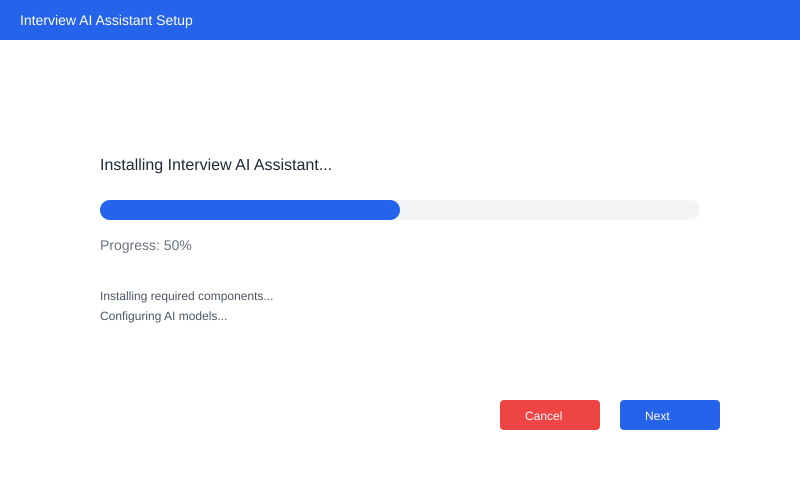
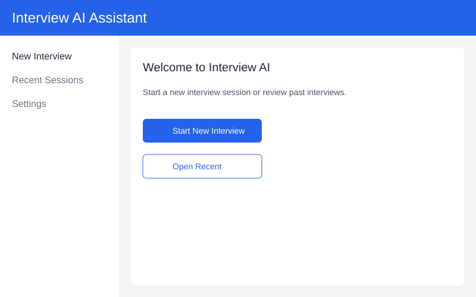
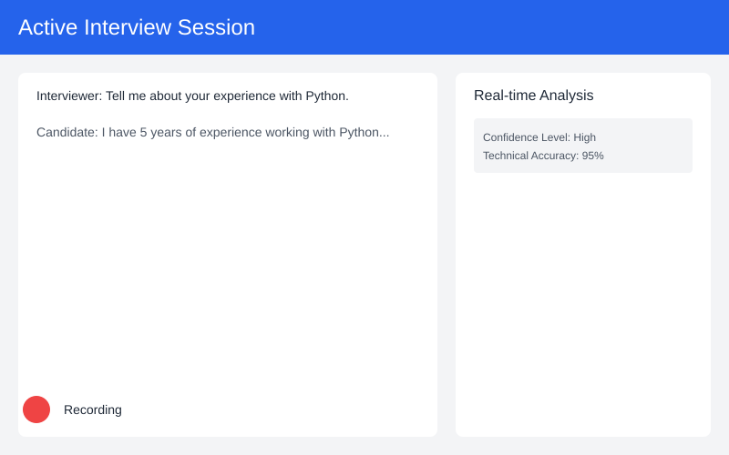
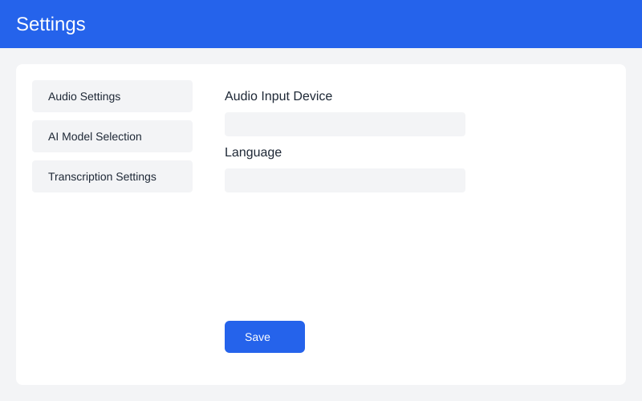

Documentation
Getting Started with Interview AI
Interview AI is a powerful desktop application designed to enhance your interview process through AI-powered analysis and real-time transcription.
System Requirements
- Windows 10 or later
- 4GB RAM minimum (8GB recommended)
- 1GB free disk space
- Microphone for audio capture (USB or built-in)
First-run checklist
- Install the app and open it once as an administrator (recommended on Windows).
- Run the audio setup and confirm your microphone is detected.
- Sign in or create a team account to enable collaboration features.
- Optional: Connect ATS or calendar integrations from Settings > Integrations.
Installation Guide
Step 1: Download
Download the installer from the download page or use the Web App if you prefer not to install locally.

Step 2: Install
Run the installer and follow the installation wizard:
- Double-click the downloaded installer
- Accept the license agreement
- Choose installation location
- When prompted, allow microphone and file system access for full functionality
- Wait for installation to complete and then launch Interview AI
Tip: If you use corporate devices with strict policies, install using an administrator account and contact IT to allow microphone permissions and local file writes.
Basic Usage
Starting a New Interview
- Launch Interview AI from your desktop or start menu
- Click "New Interview" button
- Configure audio settings if needed
- Start the interview session

During the Interview

Configuring the Application

During the Interview
- Real-time transcription appears in the main window
- AI analysis is performed in the background
- Key points and insights are highlighted automatically
Advanced Features
AI Analysis Tools
- Sentiment analysis of responses
- Key topic extraction
- Response coherence scoring
Export Options
- Export transcripts as text or PDF
- Save AI analysis reports
- Share interview highlights
Troubleshooting
Common Issues
Microphone not detected
Ensure your microphone is properly connected and enabled in Windows settings. Interview AI requires microphone access to function properly.
Transcription accuracy issues
Check your microphone quality and background noise levels. Position the microphone closer to the speaker for better results.
Application won't start
Verify that your system meets the minimum requirements and try running the application as administrator.